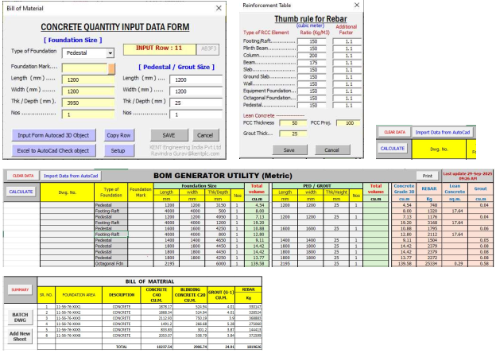

Anchor Bolt Calculator (Visual Studio 2026 & Inno Setup)
Software Screenshots


Key Features
- Metric (mm) and Imperial (Feet-Inch) Design Standards
- Imperial Steel Column Module
- Anchor Bolt Length Calculation
- PDF Report Generation
- Excel Export
- Anchor Bolt Summary Report
- User Friendly Interface
Anchor Bolt Design and Length Calculation Software for Metric and Imperial Standards.
- Automatically calculates anchor bolts and generates designations for Drawing
- Creates structure-wise and pedestal-wise anchor bolt registers in Excel
- Generates MTO summaries by bolt type and diameter
- Maintains a centralized Excel register for multiple users and projects
- Tracks "Generated By" and "Generated On" information for better traceability
- Performs automatic daily backups of the register file
- Reduces manual calculations and drafting effort, improving accuracy and productivity
Downloads:

Version: 1.0
Platform: Windows
Developed By: Ravindra Gurav
System Requirements
- Windows 10 / Windows 11
- PDF Reader for reports
- Microsoft Excel
Concrete BOM Generator Utility (Excel VBA & AutoLisp)
Software Screenshots

Key Features
- Extract Concrete Quantities BOM Generator Utility
- Automatic Volume Calculation
- Excel Export
- Fast Processing
- User Friendly Interface
Concrete MTO Extraction Software for Civil and Structural Engineers.
- Generate Concrete, Rebar, Lean Concrete, Grout, etc. calculations, along with a complete Summary, with a single click
- Enter values manually or select 3D objects from the AutoCAD model to feed data into the form
- Configure the form to save standard input values for reuse
- Batch Import – Import data from multiple AutoCAD 3D models without opening DWG files.
- Each model automatically generates a BOM sheet named after the DWG file
- A consolidated Summary sheet is updated automatically
Downloads:

Version: 1.0
Platform: Windows
Developed By: Ravindra Gurav
System Requirements
- Windows 10 / Windows 11
- AutoCad2023
- Microsoft Excel